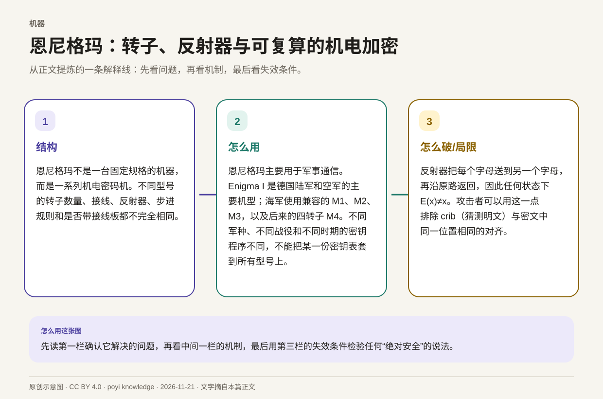
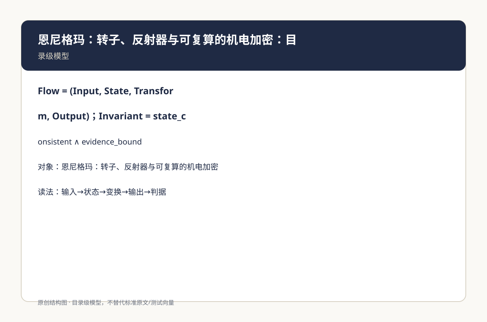
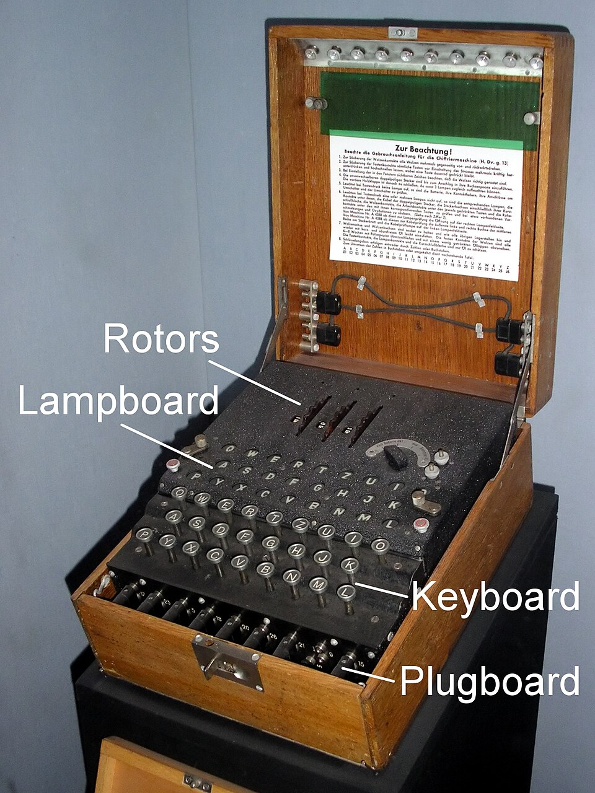

原理与机制
机器：恩尼格玛 Enigma（Enigma）。恩尼格玛不是一台固定规格的机器，而是一系列机电密码机。不同型号的转子数量、接线、反射器、步进规则和是否带接线板都不完全相同。本文以德国陆军和空军使用的 Enigma I 为主要实例：它有三个可更换转子、一个反射器和一块接线板。海军后来使用的 M4 有四个转子，不能把 M4 的接线和 Enigma I 混为一谈。Enigma I 的电流路径是：按键 → 接线板（Steckerbrett）→ 入口盘（ETW）→ 右转子 → 中转子 → 左转子 → 反射器（UKW）→ 左转子 → 中转子 → 右转子 → 接线板 → 灯泡。入口盘在 Enigma I 上按字母顺序接线；转子内部把右侧接点乱序连接到左侧接点；反射器把接点成对连接，把电流送回转子组。公开的 Enigma I 转子接线（从入口盘一侧看）为：
| 转子 | 接线 | 进位字母 |
|---|---|---|
| I | EKMFLGDQVZNTOWYHXUSPAIBRCJ | Q |
| II | AJDKSIRUXBLHWTMCQGZNPYFVOE | E |
| III | BDFHJLCPRTXVZNYEIWGAKMUSQO | V |
| IV | ESOVPZJAYQUIRHXLNFTGKDCMWB | J |
| V | VZBRGITYUPSDNHLXAWMJQOFECK | Z |
反射器 B 的接线是 YRUHQSLDPXNGOKMIEBFZCWVJAT。它没有自配对：A 与 Y 配对，B 与 R 配对，依此类推；每个字母都映到另一个字母，且映射两次回到自身。这个无自配对、二次回归的性质会传递到整台机器的映射上。把接线板记作 P，转子组的正向映射记作 R，反射器记作 U。忽略步进时，整台机器的映射可以写成
E = P ∘ R⁻¹ ∘ U ∘ R ∘ P。P 和 U 都是对合（应用两次回到自身），R 是置换，因此 E 也是对合：E(E(x))=x。同时，U 没有固定点，所以 E 也没有固定点：任何字母都不会被加密成自身。这是反射器结构的数学结果，不是操作员的约定。### 步进
每次按键前，最右侧转子先走一格。若右转子处在自己的进位字母上，中转子也走一格；若中转子处在自己的进位字母上，左转子也走一格，并且中转子会在连续两次按键中各走一格。这就是留存件印出的「double stepping」（双重步进）异常。它不是额外设计，而是棘爪和缺口机械结构的结果。因为中转子可能连续走两格，三个转子的状态序列不是简单的 26×26×26 里程表。对三个单缺口转子，从 AAA 出发的步进轨道在回到起点前有 26×25×26=16,900 个不同状态。但若把步进映射作用于全部 26³ 个可能位置，其像集有 16,926 个状态：650 个状态没有前驱，另有 26 个瞬态入口。两者不是同一个量：16,900 是周期长度，16,926 是可达设置数。来源对这个区别并不总是一致：Crypto Museum 的通用工作原理页把 16,926 称作周期，其 Enigma B 页面给出 26×25×26=16,900。本文在步进示例中报告可复算的 16,900 周期，在密钥空间中使用 16,926 个可达设置，并把这一区别保留在正文和批次记录中，而不是把两个数字混用。### 环设置与起始位置
转子有一个可转动的字母环（Ringstellung）。环设置改变转子接线相对于窗口字母的偏移；起始位置（Grundstellung）是开机时窗口显示的字母。若转子在位置 p、环设置为 r，则初始有效偏移是 p−r（模 26）。在尚未触发换位步进前，把环设置和起始位置同时增加同一个量，初始映射不变；但换位时机会随环设置改变，长消息的后续步进可能不同。因此这只是一种初始映射关系，不是整条消息的加密不变性。环设置并不等价于额外增加 26³ 个完全独立的安全参数。本文把最左转子的环设置读作没有可控制的左邻转子，因而对加密没有直接影响；中转子环设置只在左转子实际步进时起作用，而典型短消息中左转子很少步进。这个细节说明标称密钥空间与实际分析难度不是同一个数。### 接线板
接线板把字母成对交换，例如 A↔B、C↔D。它在电流进入转子组之前和离开转子组之后各作用一次，因此也是对合。Enigma I 通常使用 10 根电缆，交换 20 个字母，留下 6 个字母不接线。接线板的数量很大，但它只是一个单表替换层；分析者可以利用这一结构，而不是逐根枚举电缆。### 密钥空间
密钥由几个部分共同决定：从 5 个转子中选 3 个并排列（5·4·3=60 种）、三个转子的环设置、三个起始位置、接线板配对。若用 16,926 个可达设置、26×26 个环因子和 10 根接线板电缆，标称乘积是
60 × 16,926 × 26 × 26 × 150,738,274,937,250 = 103,484,623,446,804,960,360,000。其中接线板 10 根电缆的配置数是 26!/(6!·10!·2¹⁰)=150,738,274,937,250。若把周期长度 16,900 误当作设置数，会得到 103,325,660,891,587,134,000,000；这是另一个量，不是本文采用的标称设置乘积。更重要的是，本文按可复算的算术把密码学上强的部分估计为转子顺序与起始位置的组合：在早期只有 6 种转子顺序、且不考虑环与接线板的最坏近似下，只有 3·2·1×26×26×26=105,456 种。标称数字很大，不等于分析者必须穷举它。

为什么重要
恩尼格玛展示了状态随时间变化的替换：同一个字母在连续按键中可能被不同的映射加密，因此它不是单表替换。它的强度来自转子接线、步进、环设置、起始位置和接线板的组合，而不是某一根线或某一个齿轮。它也让算法之外的系统变得具体。机器只是硬件；双方还必须共享转子顺序、环设置、起始位置和接线板，遵循消息密钥程序，并防止操作错误。任何一环出错，都可能让分析者获得比暴力搜索更好的入口。反射器是一个典型的工程折中：它让加密和解密使用同一套设置，简化了操作，但也保证字母不会加密成自身，并给分析者提供了可排除的明文猜测。这个结构在当时被视为简化操作的设计选择；后来的分析指出它也带来结构性弱点，不能从事后视角断言设计者已经预见了所有后果。
应用与实例
阅读这件机器时，抓住三个问题：谁持有或操作它、它把什么结构约束变成可验证的步骤、失败时留下什么可见证据。实物参数只写馆藏、铭文或档案能支持的数值。

边界与攻击面
反射器把每个字母送到另一个字母，再沿原路返回，因此任何状态下 E(x)≠x。攻击者可以用这一点排除 crib（猜测明文）与密文中同一位置相同的对齐。单凭这一点不足以「break Enigma」（破解恩尼格玛），但显著缩小了候选。### 步进有规律
右转子每次按键都走，中转子在特定缺口位置走，左转子更少走。双重步进虽然让序列比里程表复杂，但仍然是由机械规则决定的。分析者可以枚举 60 种转子顺序和 17,576 个起始位置；考虑双重步进后，可达设置像集为 16,926，周期为 16,900。分析者不必枚举接线板。### 操作程序会泄露结构
重复使用消息密钥、选择可预测的起始位置、固定格式的电报开头、操作员习惯，都可能给分析者提供已知明文或候选对齐。历史上的破译不是猜出整台机器的密钥，而是把程序弱点、crib、数学结构和机器辅助结合起来。### 波兰与英国的破译路线
波兰密码局在 1932 年底由 Rejewski、Różycki 和 Zygalski 取得突破。Rejewski 通过置换理论推断转子接线；Zygalski 的穿孔片利用双重加密的消息指示符；波兰的 Bomba 用机械方式搜索日密钥。1939 年 7 月，波兰把成果交给英国和法国；1939 年 8 月 Bletchley Park 成立。Turing 在波兰 Bomba 的基础上，结合 crib 方法，发展出英国的 Bombe。不同阶段的方法不能压成某个人单独破解了恩尼格玛。### 不是单纯暴力穷举
恩尼格玛的标称密钥空间很大，但历史上的破译并没有逐个尝试全部接线板配置。分析者利用无自配对、步进规律、消息程序、crib 和已知明文，把问题分解成可处理的子问题。把破译描述成穷举 10²³ 个密钥既不准确，也掩盖了真正的攻击面。### 型号与程序差异
商业型、军用型、海军型、四转子 M4、带不同反射器的型号，接线和步进规则不同。一个型号的密钥表不能直接用于另一个型号；一条消息的破译也不能自动打开同一时期的所有通信。本文把机器家族、具体机型、密钥本、破译方法分开处理。
历史与背景
Arthur Scherbius 在 1918 年 2 月 23 日申请了德国专利 DE416219；“Enigma”这个名字当时还没有确定。1920 年代，Glühlampen（灯泡）系列逐步发展；1926 年的 Enigma D 引入可设置 26 个位置的反射器和标准键盘布局。军事型 Enigma I 在 1930 年 6 月 1 日正式服役，带双端接线板。1932 年 12 月，波兰密码局的三位数学家 Marian Rejewski、Jerzy Różycki 和 Henryk Zygalski 取得突破。Rejewski 在 1932 年底开始工作，几周内推断出转子内部接线；Zygalski 发展出利用双重加密消息指示符的穿孔片；波兰的 Bomba 用六组转子同时搜索转子顺序和起始位置。1939 年 7 月，波兰在 Pyry 会议上把成果交给英国和法国；1939 年 8 月 14 日，Bletchley Park 成立。Turing 随后在波兰 Bomba 的基础上发展出 Bombe，使用 crib 方法把搜索组织成可处理的候选。海军在 1942 年引入四转子 M4，增加了第四转子，使盟军的破译一度受阻。不同型号、不同军种和不同时期的过程不能被一个日期或一个人名概括。本文只写这些来源能够支持的节点，不把 Enigma 被破解写成单一时点的单人事迹。

逐步示例与核验
物证模型（不伪造代数公式）
1.输入：恩尼格玛 Enigma的尺寸、材质、铭文、结构或操作记录。2.结构：把机器拆成可见部件与连接关系，标出可测量项。3.操作：按同时代的使用方式复述“谁在什么条件下使用它”。4.证据：只写有馆藏、铭文或档案支持的参数；没有来源的数字留空。边界：机器条目回答“它如何工作、如何被使用”，不把机械结构强行写成密钥方程。
参考出处
- Wikipedia search entry for 恩尼格玛 Enigma. https://zh.wikipedia.org/w/index.php?search=%E6%81%A9%E5%B0%BC%E6%A0%BC%E7%8E%9B%20Enigma
- National Museum of China, Collection Highlights. https://www.chnmuseum.cn/
- Museum/collection record for 恩尼格玛 Enigma. https://www.metmuseum.org/art/collection/search